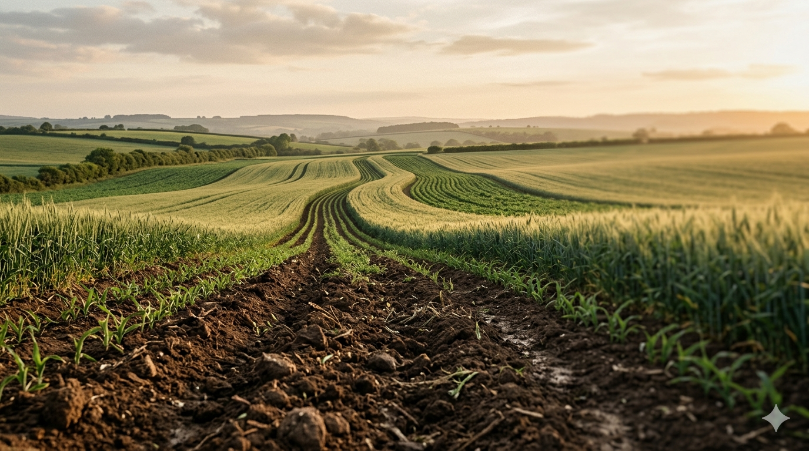

01
Focused upload flow
A straightforward upload experience that stays calm and readable on both desktop and mobile.
Terra AI

Terra AI helps you upload field images, analyze visible soil conditions, and turn them into practical restoration guidance and crop suggestions.
Image Analysis
Upload a field photo and get structured soil observations in seconds.
Recommendations
Receive practical steps for restoration, improvement, and next actions.
Crop Fit
See crop suggestions aligned to visible conditions and field context.
Product Snapshot
Upload and inspect
Start with a recent image of soil, ground cover, or field surface conditions.
AI-generated summaries
Receive a readable breakdown of what the model sees and what it suggests.
Track over time
Keep your analyses in one dashboard so the land story stays visible.
Primary Use
Field restoration
Output
Clear next steps
Terra AI is designed to reduce guesswork. Instead of scattered notes and one-off observations, the product gives you a simple path from image upload to consistent analysis.
01
A straightforward upload experience that stays calm and readable on both desktop and mobile.
02
Outputs are structured for real use, not just novelty, so recommendations are easier to act on.
03
Recent analyses, states, and suggested actions stay in one place for better follow-through.
04
The visual language and workflow both support sustainability, crop planning, and land recovery.
Take a recent image with enough visible texture, ground detail, and context from the field.
The platform interprets visible cues and returns a clear summary instead of raw model output.
Use recommendations and crop suggestions to guide restoration decisions with more confidence.
The goal is not just to look modern. It is to make land analysis easier to trust, easier to revisit, and easier to act on.